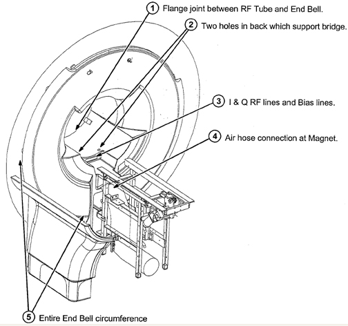
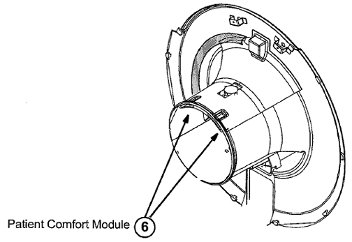
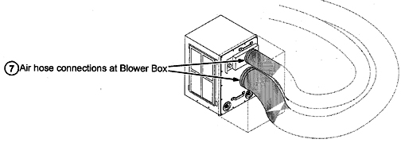

Operating Documentation
Direction 5133315-3, Rev# 14
Signa EXCITE HD 1.5T Service Methods
Module Version 2.0, Version Date 11/17/08
Operating Documentation |
| Required Persons | Preliminary Reqs | Procedure | Finalization |
|---|---|---|---|
| 1 | Not Applicable | 30 mins | Not Applicable |
This is a simple test to check the functionality of the Body Coil Air Blower System, which cools the patient bore wall surfaces by forcing air between the Gradient Coil and RF Coil. (See Illustration 1.) The rear of the magnet needs an air-tight seal in order to maintain a sufficient pressure head to force air to flow, which transfers heat away from the bore wall with convection. If an air tight seal is not present in the rear of the magnet, there will not be enough pressure to force air through the space between the Gradient and RF Coils.
| NOTE: | Air flow cooling is more critical in the Wide Open product than in previous products. Failure of the air flow cooling system may result in bore wall temperature sensor trips. |
Illustration 1: RF/Gradient Coil

| Item | Qty | Effectivity | Part# | Manufacturer | |
|---|---|---|---|---|---|
| Non Magnetic Tool Kit | 1 | - | - | - | |
| ||||
| Strong Magnetic Field! | ||||
| Ferrous materials can become dangerous projectiles in the presence of the magnetic field Produced by the Signa Magnet. | ||||
| Do not Bring any ferromagnetic tools or equipment into the magnet room. |
| NOTE: | The procedure consists of checking the most probable areas for air leakage by simply placing a hand in the area, and feeling for a large leak. (Some small leaks may exist.) Use good judgment as to the size of the leak. A visual inspection of air seals will usually indicate if a seal has failed. If a seal has failed, check to make sure the seal is in position and under adequate compression. The probable areas for leakage are as follows: |
Flange joint between the RF Tube and the End Bell (shown in Illustration 2).
Illustration 2: Rear of Magnet

Two holes in back that support the bridge (shown in Illustration 2).
I & Q RF and Bias lines (shown in Illustration 2).
Air hose connection at the magnet (shown in Illustration 2).
Entire End Bell circumference. There is an extremely important seal between the magnet and the End Bell. Inspect it carefully for compression of the seal. (See Illustration 2.)
| NOTE: | If the End Bell is secured tighter at the top than at the bottom, a leak may occur at the bottom of the End Bell. |
Patient comfort module should not have air blowing from it when the patient fan is off. (See Illustration 3.)
Illustration 3: Rear End Bell

Air hose connection at the blower box (shown in Illustration 4).
Illustration 4: Blower Box

If the system has large air leaks that cannot be resolved by simple hardware or seal adjustment, contact the OnLine Center (OLC) for further direction.
Follow the instructions from the OLC.
No finalization steps.